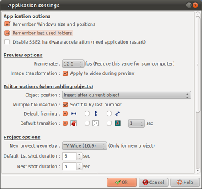

Application settings
Application settings
The dialog box Application settings allow to define options of the application :

| Application options | |
| Remember Windows size and positions |
|
| Remember last used folders |
|
| Disable SSE2 hardware acceleration | The hardware acceleration
can raise problems on ancient computer or with virtual
computer.
|
| Preview options | |
| Frame
rate |
Reduce this number on slow computer or if the capacity of the multimedia reader is frequently in the red. |
| Image transformation (Apply to video during preview) |
|
| Editor options | |
| Object
position |
This option allows to
adjust the position which occupy the new objects in the
timeline during the insertions.
|
| Multiple
file insertion |
This option allows to
adjust the way will be sorted out files when you select
several files in Add
file.
|
| Default
framing |
Defined the framing to be
made during the file insertion:
|
| Default
transition |
Defined the transition to
be inserted between slides during the insertions :
|
| Project options | |
| New
project geometry |
Select the geometry of
image to be used for the creation of the projects. Three kind of geometry are available :
|
| Default
1st shot duration |
Defined the default
duration of the first shot of slides during their
creation. |
| Next
shot duration |
Defined the default
duration of next shots. |
| Speed
wave |
Defined the curve of speed
to be used for the transitions and the animations:
|
| Default rendering options | |
| File
format |
Select the default file
type to use for the rendering among the proposed list. |
| Video
standard |
Select the default video
standard to use, PAL or NTSC. |
| Format |
Select the default image format to use for the rendering among the proposed list. |
| Video
codec |
Select the default video codec to use for the rendering among the proposed list. |
| Bit rate |
Select the default bit rate to use for video during the rendering among the proposed list. |
| Audio
codec |
Select the default audio codec to use for the rendering among the proposed list. |
| Bit rate |
Select the default bit rate to use for audio during the rendering among the proposed list. |
 Files will be reframed so that the totality of the
width of the image is shown
Files will be reframed so that the totality of the
width of the image is shown Files will be reframed so that the totality of the
height of the image is shown
Files will be reframed so that the totality of the
height of the image is shown Files will be reframed at best
Files will be reframed at best Chosen randomly a transition in the library
Chosen randomly a transition in the library No transition
No transition Crossfade transition
Crossfade transitionLast modification : 06/06/2011 by domledom